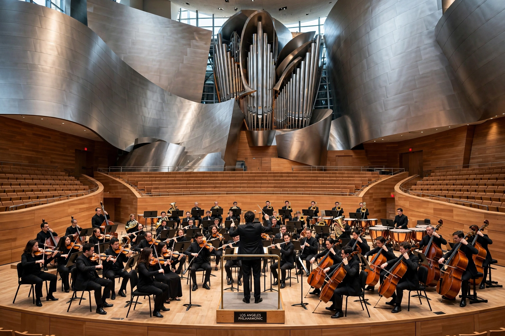

The Los Angeles Philharmonic, commonly called the LA Phil, is an American orchestra based in Los Angeles, California. Founded in 1919, it performs at the Walt Disney Concert Hall in winter and the Hollywood Bowl in summer.

Founded by William Andrews Clark Jr., the orchestra was led by conductors including Otto Klemperer, Zubin Mehta, Carlo Maria Giulini, André Previn and Esa-Pekka Salonen. It is noted for adventurous programming and new music commissions.
Under Gustavo Dudamel, inspired by Venezuela's El Sistema, the LA Phil created YOLA (Youth Orchestra Los Angeles), providing free instruments and tuition to young people.